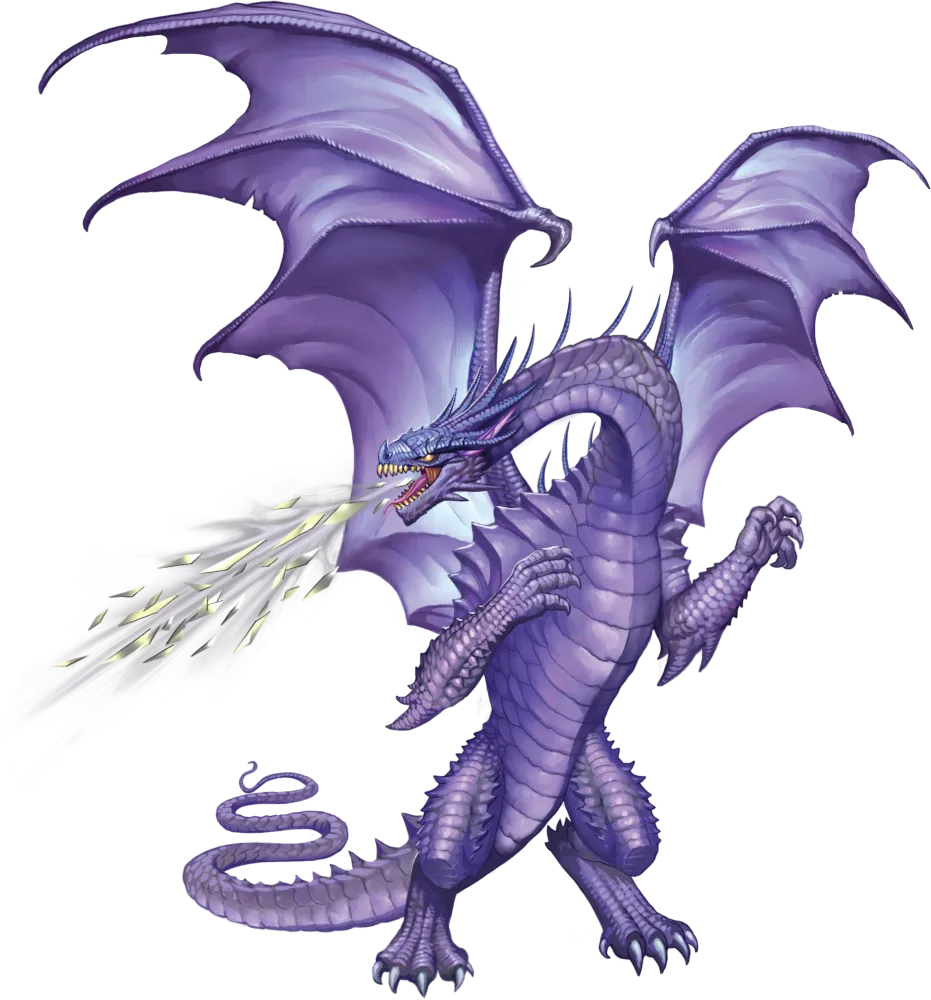

各年龄段数据卡
如同经常与它们打交道的希德一样，王庭龙坚信“命运”是一股拥有自我意识的宏大元叙事，主宰着整个宇宙，并强制推行故事中常见的叙事套路。王庭龙学会了借势利用这些叙事来为自己谋利，建立起属于自己的领地与王庭，将巨龙、希德、精类以及其他生灵一并纳入其中。通过创立自己的王庭，它们编织出专属的规则、礼仪与故事，迫使他人在王庭龙划定的框架内扮演各自的角色。这些王庭并非游离于错综复杂的精类政治之网外，而是其中的一部分。当被迫参与受他人掌控的精类王庭时，王庭龙往往心怀怨怼，因为它们远更偏爱统御自己的王庭；然而无论如何，它们与自己的王庭终究都在其中扮演着既定的角色。 与许多其他巨龙血统一样，王庭龙异常高傲自负，但王庭龙的傲慢甚至能令其他巨龙都感到刺耳不适，足以跻身最傲慢的巨龙之列。当然，它们的性格千差万别，从仁慈温和、顽劣促狭到嗜虐成性皆有之。不过，几乎所有王庭龙都远更看重“荣誉与耻辱”“顺从与反叛”的范式，而非善恶之辨――在它们看来，善恶与自身的叙事毫无相干。 乌洛吉亚诺乌洛吉亚诺是星散王庭之主。这座肃穆的王庭坐落于三座彼此相隔数千英里的小山丘之下，并分为三座翼殿。星散王庭的每一座翼殿都拥有一片描绘不同地域星象的“夜空”。乌洛吉亚诺是一位睿智而神秘的贤者，彻底拥抱了自己的叙事，终日观测并记录群星的轨迹。借助这些记录，他能够洞悉当下的事件、预见未来，并断定一个人的叙事与命运。无论是精类还是凡人，都有许多人慕名求访乌洛吉亚诺的才华。然而令一些访客懊丧的是，乌洛吉亚诺总是用押韵的隐晦诗句回答所有提问，大多数预言与判词往往要到事后回想才能领悟真意。 狡黠、机敏而专横的王庭龙总是在寻找方法改善自身处境、压过宿敌一头、扩张自己的王庭或是操纵他人。拜访王庭龙的访客最好谨言慎行。大多数王庭龙都热衷于故意曲解字句与一时兴起的念头，使其偏离本意，从而更好地服务于自身的需求与目的。如同大多数热衷政治的精类一样，王庭龙痛恨自己的个人叙事遭到干扰、无视或篡夺，一旦有人侮辱它们、擅闯其巢穴，或拒绝遵守其王庭的戒律与礼仪，它们便会恶毒地大加鞭挞。这类惩罚通常表现为囚禁，或是附带几乎不可能达成的解咒条款的长期诅咒；不过，若契合自身的叙事，另一些行事更为直接的王庭龙也乐于诉诸骤然爆发的暴力。 王庭龙在人群中格外醒目，它们通常体态修长、棱角分明，长着纤细的尾巴与脖颈，当然，衣着也永远无懈可击。它们生有长而尖的耳朵，头顶排列着数枚小巧而突出的龙角，宛如一顶王冠。据说，王庭龙角冠的纹路决定了它的命运――无论好坏，皆框定了它的叙事与角色；不过，有些王庭龙会刻意尝试违逆这天定的叙事，用更契合自身野心的剧本取而代之。另一些对自己叙事不满的王庭龙，有时则会通过编造并散布故事来谋求改变。一旦这些故事在民众间流传开来，便能改写其叙事的结构，使巨龙既无需打破自家王庭的规则与精类政治的宏大网络，又能反过来影响命运。王庭龙的鳞片呈现出紫色与皇家蓝交融的色泽。 何为叙事？王庭龙相信，所有智慧生物都与某种“叙事”相连――那是故事、神话与寓言中常见的原型套路，在漫长岁月中被一遍又一遍地重演。你的叙事既是束缚，也是力量的源泉。挣脱自身叙事极其艰难，有时甚至险象环生；但了解自己的叙事――知晓自己的弱点、长处、宿敌以及正在生效的其他套路――便能让你洞察自身、预见未来，并看清前路上的阻碍。不仅如此，通过讲述包含自身叙事相关套路与情节的故事，你还能缓慢地改写叙事本身――当然，前提是这个故事得流传开来！正因如此，讲故事在王庭龙文化中占据着举足轻重的地位。 王庭龙的巢穴通常位于异界空间之中，需经由地底入口进入，传统上多连通山丘、土冢或洞窟。它们的巢穴通常陈设奢华，且往往如迷宫般错综复杂，令不速之客难以轻易脱身。它们钟爱华服、精美的藏品与周密的计谋，这些事物在其巢穴中皆随处可见。 王庭龙极其看重协议、交易与承诺（哪怕是未曾明言的默契），并会一字不差地严格履行；不过，它们在缔结此类协议时，几乎总少不了诡计、欺瞒与误导。唯有走投无路之人才会寻求与王庭龙做交易，也唯有愚者才会指望结果能如自己所愿。不幸的是，王庭龙将任何说出口的话语都视作立下的诺言，甚至能将一句随口的修辞扭曲成庄严的契约，并要求对方彻头彻尾地履行到底。无意间与王庭龙缔结契约的倒霉蛋可谓比比皆是。 王庭宝库大多数王庭龙的宝库虽各有千秋，但总少不了三样东西：精美的珍宝、贵重的情报，以及他人欠下的人情。虽然许多财宝与贵重艺术品被深锁在宝库中或穿戴在它们身上，但其余藏品则会作为艺术装置与展品散落于王庭各处。它们另一些珍视的宝藏则是无形的――道听途说的流言、洞察识破的秘密，以及凡人与精类欠它们的无数人情债。 礼仪大师雷加斯特纵观历史，无数王庭龙曾在仙境插下旗帜、建立王庭，继而又眼看着自己传奇般的崛起走向流星般的陨落。这正是邦国与帝国故事的本质，在命运眼中既不可避免又冷酷无情。人人都喜爱精彩的起源故事，命运也不例外；但与此同时，伴随着灭顶之灾而来的“马车倾覆”式戏剧性崩塌，也同样令它们着迷不已。 正因如此，王庭龙极少能活到成为太古龙，尤其是那些骄傲到不肯逃离沉船的家伙。至于少数幸存下来的王庭龙，往往需要建立多个随时代更迭而兴衰起伏的王庭。然而，太古王庭龙雷加斯特却是一个例外――他凭着一座绵延万古、直至今日依然屹立不倒的单一王庭，完美印证了这条铁律的反面。 被尊称为“礼仪大师”的雷加斯特统治着誓约王庭――这座微小的中立王庭在其令人惊叹的数千年岁月中，从未哪怕一次站上过精类政治的舞台中央。在每一场重大冲突里，誓约王庭都只是充当中立的仲裁者。即便它偏袒某一方，也是应邀代表其他存在行事；正因如此，它在故事中从不扮演主角或反派的关键角色。誓约王庭只是退居幕后评判他人，以一种既能为故事增色、又严格恪守精类社会戒律与命运喜好的方式行事。 主场优势王庭龙通常在自己的精类领地内升座理政，这些领地要么位于广袤的仙境之中，要么地处独立的异界。尤其是在仙境之内，它们影响领地构成与自然法则的能力，意味着外人几乎不可能与它们进行一场公平的较量。在自己的王庭之中，王庭龙完全有可能将世界本身的规则扭曲成对自己有利的模样。 一个纯粹为了成全命运、从不谋求自身私利的王庭，命运又怎会去嘲弄它呢？更何况，誓约王庭虽小却实力强横，不仅有一头太古龙坐镇统治，麾下还云集着诸多其他强大的居民。 雷加斯特之所以千百次地担得起“礼仪大师”这一名号，全因他对仙灵礼仪与待客之道近乎苛刻的恪守。他所推崇的中立原则意味着：哪怕他个人赞同某位恳求者的请求，只要对方越雷池半步，或在开口求援的方式上犯下一个微小的礼数差错，他也会断然拒绝赐予对方所求的恩惠。反过来，即便是他心怀异议的对象，只要一字不差地遵循恰当的礼仪，也能如愿以偿。当然，当赐予一方的恩惠令另一方陷入不利――例如在冲突之中――受损的一方也总能找到合乎礼法的方式，恰当地请求撤销那份恩惠。如此一来，誓约王庭既成了一张可预测的变数牌，又成了一处常见的冒险寻访之地，让命运得以兴致盎然地旁观：求援者究竟能否率先抵达誓约王庭？倘若抵达了，又能否顺利求得恩惠？ 凭借在故事中扮演这一享有特权的角色，誓约王庭赢得的远不止命运的眷顾：作为向那些严守礼仪者赐予恩惠与援助的交换，礼仪大师会向每一位登门求索的旅人索取一道与这座王庭同名的“誓约”。 这些誓约的条款五花八门。有些要求在特定时间作出具体的偿付，有些索取令凡人一头雾水的深奥或隐喻性代价，还有相当一部分只是要求欠下一份同等价值的人情――具体内容由雷加斯特与誓约王庭裁定，并在日后未定的某个时间偿还。许多精类并不会严格区分短寿凡人的身份角色与家族血脉，在涉及债务与誓约时尤为如此。倘若某位家主在五百年前向雷加斯特许下诺言，那么当礼仪大师登门讨债时，现任家主就必须偿还这笔债务；因为在誓约王庭看来，既然他们承袭了同一份家主名分，本质上便是同一个人。如果当初的约定涉及极具私人色彩的要求――对当年的立约者而言或许顺理成章，对如今被迫偿债的后人而言却无异于晴天霹雳，比如要求缔结一场仙灵联姻，或是交出家族中的一名孩童送入王庭抚养并充当随从――局面便会变得格外尴尬。雷加斯特特意让这类誓约悬而未决，以此庇护自己的王庭：因为每一道未尽的誓约都是一段潜在的故事，倘若命运终结了誓约王庭，这些故事便会被半途腰斩。 伟大之母埃克西作者：扎卡里・拉普安特（Zachary Lapointe） 埃克西，亦被称为“伟大之母”，是丝绸王庭的绝对君主。其他王庭龙有时会呈现出深沉、优雅而尊贵的色泽，埃克西却因体内过度充盈着神秘的精类能量，全身色彩也随之浓烈饱满到了极点，从鳞片一直延伸到她那彩虹般的双翼。伟大之母钟爱世间一切柔软之物，因此总是身披丝绸，她的仙灵王庭也由此得名。在王庭龙中颇为罕见、反而更让人联想到魅心龙的是，埃克西周身萦绕着一种近乎受诅般的倾世魅惑――无论她行至何处，都会在巨龙与凡人之间引得众生倾倒侧目，从而在其他王国与社会中掀起混乱。尽管力量已成长至太古龙之境，她依然偏爱外交胜过正面交锋，并在漫长岁月里与众多生灵结下风流情缘，繁衍出数不清的后代，其中既有巨龙，也有巨龙后嗣。她的王庭中聚居着大量她的子嗣，这也为她“伟大之母”的头衔赋予了第二层含义。 阿莫克雷的博弈：琼浆王庭与契责 Amokray's Gambit: The Ambrosial Court and Obligations我在琼浆王庭度过的时光，表面上或许不像仙境的其他某些区域那样危机四伏，但归根结底，那里恐怕才是最凶险的地方。面对显而易见的威胁时，时刻保持警惕并不难；可在琼浆王庭华美绝伦的景致与无微不至的款待之中，却暗藏着王庭龙阿莫克雷亲手编织的狡诈陷阱。亲爱的读者，尽管鄙人学识渊博、行事审慎，你的这位谦卑叙述者还是在察觉危险之前便一脚踏了进去。 容我为自己辩解一句，之所以会一时失察，部分原因在于阿莫克雷对我并无加害之意。对于针对我尊贵之躯的危险，我早已练就了颇为敏锐的直觉，当时我能肯定绝无此类歹意。真正的问题出在“契责之链”上――事后我才了解到，这在王庭龙与希德贵族中都是相当惯用的伎俩。随口一句无心之言，就可能让你背上远超预期的漫长契约。世人常告诫切勿享用仙灵的饮食，其中蕴含的凶险并不仅仅在于它们神秘的魔力与化学成分――我确信有些仙灵饮食确实掺杂了危险的幻惑魔力或成瘾物质――但琼浆王庭的佳肴美馔里绝无此类手脚。这并非盲目轻信的臆断；我在动口前便已暗中检验过了。 然而，仅仅是扮演了主人与宾客的角色、受用了对方的款待，并在为撰写本书而进行的访谈中接受了阿莫克雷提供的解答，这一系列举动本身便已构成了契责。它们让我欠下了他的人情债。而在他的领地之内，这笔人情便成了他用来进一步强迫我的框架。 既然身处他的王庭与权力核心之中，我自然有义务清偿这笔债务；不过，后续为搜集研究素材而持续开展的探讨与访谈，让我得以沿着精心设计的提问脉络与字斟句酌的回应步步推进，最终顺利抵清债务、脱身离去。尽管我看得出阿莫克雷对自己反被自家话语套住感到颇为懊恼，但他似乎又离奇地欣喜于终于遇上了一个足以与他斗智交锋的对手！ ――永光贤者卡利赞德雷克斯 |
 王庭龙 |